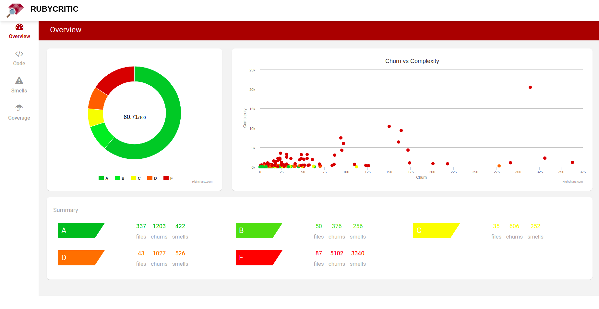
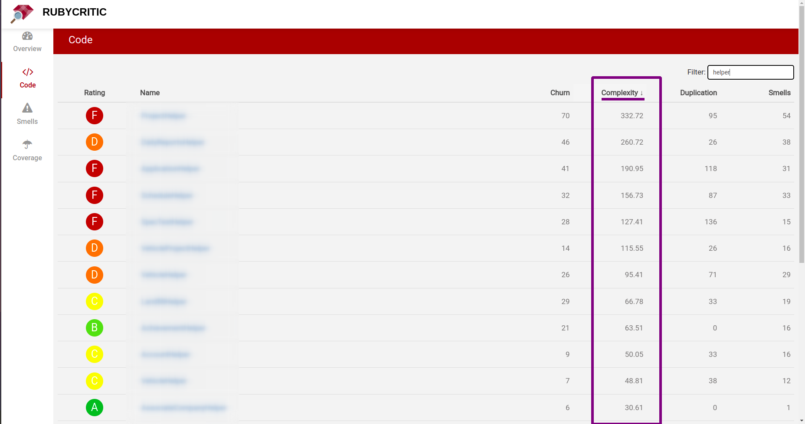
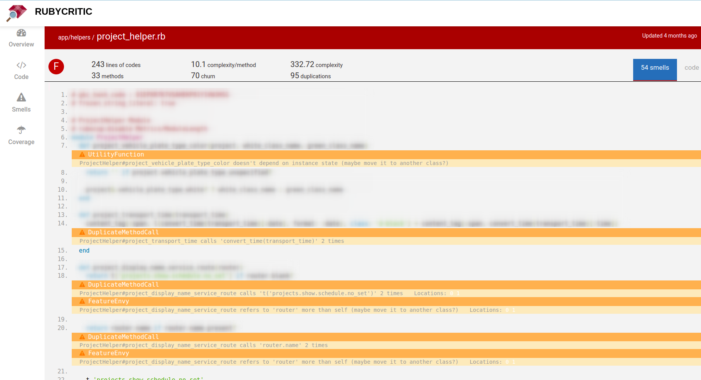
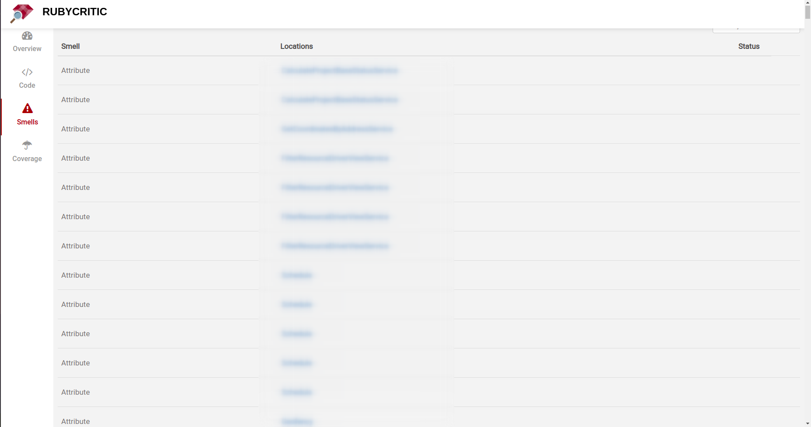
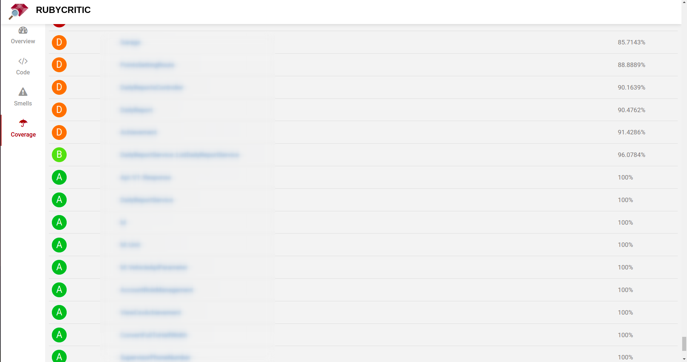

🌱 RubyCritic cung cấp báo cáo trực quan về những vấn đề như code thối, cấu trúc code, tính dễ kiểm tra, và độ phủ của test case cho app Ruby.
🌱 Đang liên tục phát triển và release tính năng mới. Có trong danh sách Ruby Awesome.
🌱 Bài viết này sẽ giới thiệu về một số những lợi ích mà RubyCritic đem lại, các dependencies của nó và cách để đọc code reports.
🌿Why?
🌱 Bạn có thể xem xét sử dụng RubyCritic nếu muốn có một nơi có thể theo dõi sự phát triển của code trong dự án. Áp dụng RubyCritic vào process dự án chắc chắn sẽ giảm được thời gian của team dev cho việc khắc phục Technical debts. Hầu hết các technical debts đều sẽ được phát hiện sớm và ‘trả nợ’ trong giai đoạn phát triển luôn.
technical debts là gì? … … …
🌱 Một số những lợi ích của RubyCritic khi chúng ta áp dụng cho dự án hay process phát triển:
- Thống nhất thông tin về một nơi duy nhất.
- Báo cáo trực quan
- Cài đặt dễ dàng
- Không config
- Cho phép tùy chỉnh theo nhu cầu sử dụng
- Có thể mở rộng - Là open-source chúng ta có thể tích hợp thêm tính năng của mình.
- Một trình tạo huy hiệu.
Để hiểu hơn về cách RubyCritic hoạt động, hãy xem những internal dependencies được sử dụng để tạo một report mặt mũi như thế nào nhé!
🌿 Internal dependencies trong Rubycritic
- Khi bạn thêm
RubyCritic, một số dependencies cũng được thêm kèm. - Điểm qua những dependencies chủ chốt:
The Reek,Flay, vàFlog. Đây đều là những gem cho phépRubyCritichiển thị những thông tin hữu ích liên quan đến những code của bạn. Hiểu được cách hoạt động của bọn này sẽ thuận tiện hơn trong việc sử dụngRubyCritic.
🌱 Reek: Tìm code Ruby bốc mùi 💩
- Reek là một gem dùng để tìm những dòng code 💩 trong Ruby. Code thối không phải là code sai, nó là những dòng code có thể được viết dễ đọc hơn, dễ bảo trì hoặc phát triển hơn nhưng vẫn đúng logic với ban đầu.
- Reek sẽ phân tích xem có chỗ nào bốc mùi nhưng sẽ không gợi ý là sửa như thế nào vì hầu như code ‘có mùi’ đều liên quan đến business logic hoặc dựa theo kinh nghiệm của lập trình viên đối với một ngôn ngữ lập trình.
Reek chỉ đánh giá được theo hướng chủ quan, nên chúng ta cũng nên cân nhắc thêm dựa theo logic của dự án cũng như kinh nghiệm của bản thân trước khi quyết định sửa code.
-
Reek cung cấp extensive list of smells. Kiểm tra và chỉ ra những chỗ bốc mùi trong:
- Classes
- Attributes
- Methods
- Parameters
- Moduldes
- Iterators
- The implementation of polymorphism
-
Nhờ đó chúng ta sẽ chủ động trong việc làm cho code dễ đọc và dễ bảo trì hơn.
-
Cho phép config để:
- Tắt kiểm tra những rule ko phù hợp với dự án.
- Chỉ định các thư mục không cần kiểm tra.
- Sử dụng filter để tắt tiếng cảnh báo.
🌱 Flay: Kiểm tra code lặp
-
Flay xác định những điểm tương đồng trong cấu trúc code, bao gồm:
- Tìm ra code bị lặp lại trong dự án.
- Cho điểm để đánh giá mức độ tốt của code(điểm càng thấp, code càng ngon).
- Checking the difference at any code level.
-
Nếu Flay báo cáo có sự trùng lặp trong code, khả năng cao chúng ta nên sửa nó. Đừng bỏ qua vì nó rất có khả năng dẫn đến bugs. Khi bạn fix thêm gì đó ở một chỗ nhưng quên sửa những chỗ còn lại thì có khả năng bug sẽ xuất hiện đó.
# lib/flay.rb:80
opts.on("-m", "--mass MASS", Integer, "Sets mass threshold (default = #{options[:mass]})") do |m|
options[:mass] = m.to_i
end
# lib/flay.rb:105
opts.on("-t", "--timeout TIME", Integer, "Set the timeout. (default = #{options[:timeout]})") do |t|
options[:timeout] = t.to_i
endKiểm tra:
$ flay lib/flay.rb
Total score (lower is better) = 36
1) Similar code found in :iter (mass = 36)
lib/flay.rb:80
lib/flay.rb:105Mặc dù nội dung bên trong không giống nhau hoàn toàn nhưng cấu trúc code có thể được cấu trúc lại để tránh trùng lặp. Đó là magic của Flay.
Flay đánh giá trùng lặp dựa trên cấu trúc code, nếu điểm trùng lặp càng thấp có nghĩa code chúng ta càng ngon(dry). Tuy nhiên, chúng ta vẫn cần đánh giá thêm cả về logic của dự án trước khi sửa nhé.
🌱 Flog: Kiểm tra độ phức tạp trong code
Flog kiểm tra xem độ phức tạp của code(code khó đọc). Flog gán điểm phức tạp cho từng dòng sau đó tính tổng cho mỗi method hoặc class.
def validate_expiration
return if exp_month.blank? || exp_year.blank?
...
endKiểm tra:
$ flog app/models/credit_card.rb
5.2: CreditCard#validate_expiration app/models/credit_card.rb:12-15- Độ phức tạp đang là 5.2, giờ mình sẽ sửa để nó dễ đọc hơn một chút
def validate_expiration
return if exp_month.blank?
return if exp_year.blank?
...
endKiểm tra:
$ flog app/models/credit_card.rb
4.8: CreditCard#validate_expiration app/models/credit_card.rb:12-15Viết code là trò chơi đơn giản, nhưng để viết code đơn giản, dễ hiểu thì lại khó nhất trên đời 😆 Đừng cố viết cao siêu làm gì, hãy viết code thật dễ hiểu, hiệu quả để những người đồng nghiệp đọc code của bạn không phải chửi thầm nhé ❤️
🌱 Other Dependencies
- Ngoài ra
RubyCriticcòn có nhiều dependencies khác, có cả những gem phổ biến mà chúng ta vẫn thường dùng nhưbuybug,simpleCov,rubocop. Mọi người có thể xem đầy đủ các dependencies ở đây.
🌿Áp dụng cho dự án Ruby on Rails
RubyCriticcung cấp tài liệu chi tiết để bắt đầu mà không cần config nhiều. Trong khuôn khổ bài viết này, chúng ta sẽ tập trung cho việc phân tích những thông số có trong những báo cáo củaRubyCritic.- Có 3 vấn đề được báo cáo là
Code,SmellsvàCoverage. Cùng lược qua từng tính năng này nhé!
🌱 Overview
Sau khi chạy rubycritic xong, tự động redirect tới một trang html chứa các reports của dự án.

- Màn
Overviewhiển thị tổng điểm của dự án trên một cái biểu đồ donut, xếp hạng theo A là tốt nhất và F là tệ nhất. - Phần
Summaryhiển thị chi tiết của từng rating (A -> F) bao gồm số lượng files, số lượng commit(churns) và số lượng smell code được tìm thấy. Churn vs Complexityhiển thị vị trí các Class/Module là một điểm, ứng với 2 chỉ số độ phức tạp và số lượng commit => phản ánh chính xác những điểm chưa tốt của dự án.
🌱 Code Report
- Hiển thị điểm của từng Class/Module bao gồm
churn,complexity,duplicationandsmells. - Bạn có thể sort theo từng chỉ số để tiện đánh giá.
- Có thể search tên của Class/Module.

-
Click vào một Class/Module bất kỳ sẽ hiển thị chi tiết source code và các số liệu đi kèm như:
- Code line
- Chất lượng code
- Churn
- Độ phức tạp của method
- Điểm phức tạp(tổng của class)
- Số lượng code bị duplicates.
- Số lượng smells tìm thấy.
-
Những dòng code có vấn đề sẽ được highlight(Dựa theo thông tin cả Reek gem cung cấp)

🌱 Smells Report
- Hiển thị smell type, vị trí chính xác nơi bốc mùi và tình trạng khắc phục.
- Như đã nói ở trên, Smells được cung cấp bởi gem Reek, và màn này chúng ta cũng có thể search và sort được như
Code Report. - Bạn có thể nhìn thấy các class/module được nhóm theo smell type.

🌱 Coverage Report

- Chỉ hiển thị thông số độ bao phủ của kiếm thử đối với những class/module.
- Không thể sắp xếp hoặc tìm kiếm như 2 trang bên trên.
- Nếu tích hợp
SimpleCovthì sẽ chi tiết và trực quan hơn, nhưng với hầu hết trường hợp chỉ cần một báo cáo đơn giản để đánh giá độ phủ của dự án,Coverage Reportđã hoàn toàn đáp ứng được rồi.